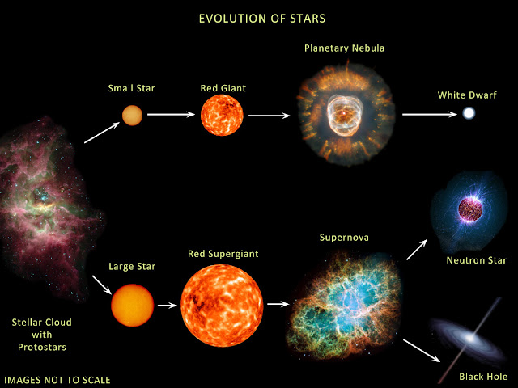
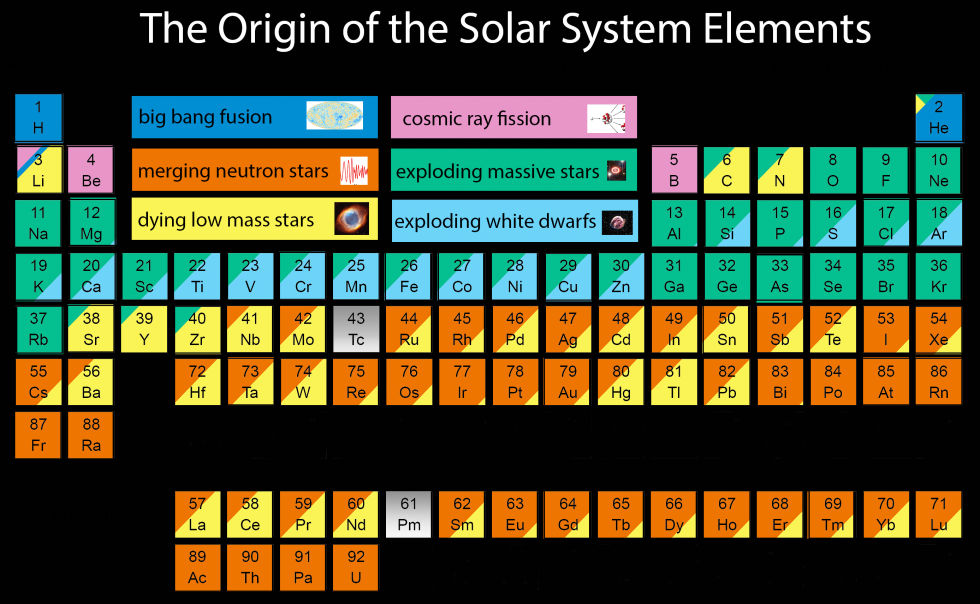

Ian Padilla-Gay

Mayer Hall, Physics Dept
San Diego, CA, United States
I am an N3AS Postdoctoral Fellow at the University of California, Berkeley, and a Visiting Scholar at Fuller Lab, UC San Diego. I earned my PhD in Physics from the University of Copenhagen in October 2022.
I aim to uncover the role of neutrinos–fundamental particles–in supernova explosions.
My research focuses on neutrino flavor conversion and heavy-element nucleosynthesis in dense astrophysical environments. I am interested in approximating the effects of collective neutrino oscillations in state-of-the-art hydrodynamical simulations and studying the conditions and outcomes of heavy-element nucleosynthesis. At SLAC/Stanford, I investigated how elements heavier than iron—such as Molybdenum-92,94, Ruthenium-96,98, and Niobium-92—are produced, and how general relativistic effects, supernova dynamics, and neutrino heating influence this process. Currently, at UC San Diego, I am investigating the occurnce of flavor instabilities in dense neutrino gases, as well as the role of neutrino oscillations in producing important pronton-rich isotopes in the universe.


Left: The core of a massive star collapses, triggering a core-collapse supernova explosion where neutrinos of all flavors are produced in huge quantities. Image from earthspacecircle. Right: The origin of many isotopes in the solar system remains unknown; environments such as supernovae and neutron star mergers are promising sites for heavy-element synthesis, where neutrinos can alter the conditions under which elements are created. Image from CCAPP.
news
| Oct 01, 2025 | Started as an N3AS Postdoctoral Fellow at UC Berkeley |
|---|---|
| Mar 06, 2023 | Started as a Postdoctoral Research Associate at SLAC National Lab |
| Oct 22, 2022 | Graduated with a PhD in Physics from the University of Copenhagen |